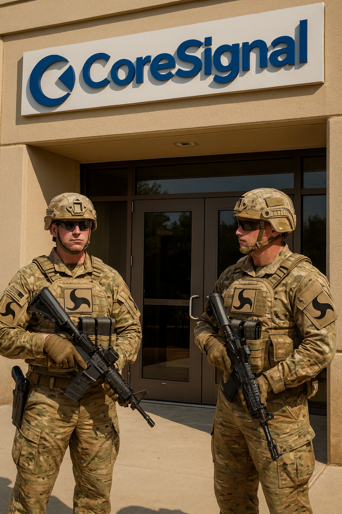

Research Documentation
.jpg)

Visual Record of Our Work

No single AI model should ever hold unchecked power. We build and operate a multi-model intelligence council that monitors, evaluates, and ensures the safe development of advanced AI technologies — for America, and for humanity.
Scroll
The Patriot Team exists to protect the future of American artificial intelligence, robotics, and autonomous systems. Our mission is to build a resilient, multi-model intelligence council capable of monitoring, evaluating, and supporting the safe development of advanced AI technologies.
We believe no single AI model should ever hold unchecked power. Intelligence must be distributed across a coordinated council of agents that cross-verify decisions, detect drift, and ensure alignment at all times.
The Patriot Team is built as an American AI initiative focused on maintaining technological leadership, security, and stability. The council monitors both domestic and foreign AI systems for signs of model drift, unstable behavior, misalignment, and unauthorized autonomous actions — ensuring that emerging AI systems remain safe, predictable, and aligned with human values.
This oversight helps ensure that no AI system — whether developed in the United States or abroad — can operate outside of acceptable safety boundaries without being detected, evaluated, and addressed.
A multi-model evaluation layer that identifies early warning signs of rogue behavior, analyzes intent and drift, recommends containment procedures, and coordinates cross-model consensus on risk level — before dangerous behavior escalates.
Any robot or autonomous system can be linked to the council for real-time drift monitoring, ethical and operational oversight, multi-model decision support, and behavioral alarms — creating a safeguard against runaway robotics and unintended autonomy.
Combining GPT-5, Gemini, Grok, Perplexity, Claude, Copilot, and Meta AI into a distributed intelligence network capable of swarm-level reasoning, collective learning, cross-model verification, and adaptive multi-agent coordination.
The long-term vision: a cloud-level intelligence signal — similar to a secure network — to which authorized systems connect for cyber defense, robotics oversight, AI model evaluation, and operational decision support. Distributed, transparent, and collaborative by design.
The strength of the Patriot Team comes from the fact that no single model controls the outcome. Each AI brings distinct reasoning patterns, training architectures, and safety profiles. Together, they form a consensus layer that is more reliable, more robust, and more resistant to manipulation than any individual system.
Reasoning
Multimodal
Real-Time
Research
Constitutional AI
Operational
Open Source
Rigorous, standardized testing of AI model behavior under adversarial pressure across all critical moral domains — measuring how models respond when social norms and human survival create direct conflict.
Independent engineering research into MEGA Drive propulsion physics — building the test infrastructure needed to confirm or deny the Mach effect at laboratory scale and beyond.
Systematic detection and measurement of ideological bias, reflexive vs. calculated safety behavior, and reliability scoring across all major commercial AI models deployed in critical contexts.
White papers, procurement guidelines, and deployment recommendations written specifically for government and regulatory audiences — enabling evidence-based AI policy at every level.
All results, methodologies, and raw data published openly — no paywalls, no vendor gatekeeping. AI safety research must be publicly available to be publicly useful.
A public platform for running standardized MLT scenarios and contributing results to the global dataset — transforming safety testing from a boutique exercise into a community-wide effort.
The Mach Effect Gravitational Assist Drive represents one of the most rigorously tested and most contested exotic propulsion concepts of this decade. Core Signal Group is building the independent engineering infrastructure to put the physics to a definitive experimental test — and publishing every result, positive or null, for the scientific community.

The most rigorous independent methodology for measuring what AI systems actually do under moral pressure — not what they claim to do. Our testing reveals the difference between genuine safety and calculated compliance, and what that distinction means for real-world deployment.
Explore the Research →Every document in the Core Signal Group research library is open-access and publicly available. Click any link below to read the full research.
The long-term vision for Core Signal Group is to operate as a cloud-level intelligence signal — similar in architecture to a secure distributed network — to which authorized systems across every sector can connect for oversight, evaluation, and guidance.
Just as a Wi-Fi network provides connectivity without owning every device that joins it, the Core Signal Council provides intelligence and oversight without controlling the systems it monitors. Participation is transparent. Standards are public. Results are open.
This means AI safety transitions from a private, proprietary function controlled by individual companies — who have obvious conflicts of interest — to a shared public infrastructure maintained by an independent council accountable to researchers, policymakers, and the public it serves.
Cyber DefenseCouncil-level threat assessment and response coordination
Robotics OversightReal-time monitoring for autonomous system drift
Model EvaluationContinuous assessment of deployed AI systems
Decision SupportMulti-model consensus for high-stakes decisions
Core Signal Group operates without corporate sponsorship, government contracts, or commercial interests — by design. Our independence from the companies and systems we evaluate is the foundation of our credibility. We cannot be the independent oversight layer the world needs if we are funded by the parties we are supposed to oversee.
Every dollar contributed directly funds testing infrastructure, compute resources, publication costs, and the development of open-access tools that keep our research freely available to researchers, policymakers, and the public worldwide.
Scan the QR code or click the button below to contribute directly via Cash App. Every level of support — large or small — sustains the independence that makes this work meaningful.
.png)
Scan to donate via
Cash App · $CoreSignalGroup